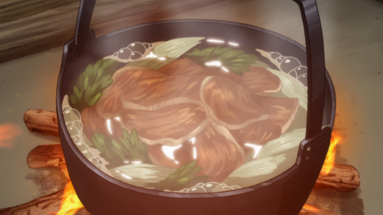

Ingredients:
- 8 cups water
- 16-inch piece of kombu
- 2 big handfuls of bonito flakes
- Salt
- 2 leeks, sliced
- Mustard greens, 1 bunch
- Venison slices
- Awase miso, optional
Yuk Ohaw
How to make it:
- Place kombu in water in a pot. Let sit one hour, then turn heat on until the water just starts to
simmer. Take kombu
out, and throw away. Add in the bonito flakes, bring up to a boil, then turn the heat off and let
steep, about 10
minutes.
- Strain bonito out, season with salt, and then add in white parts of the leeks, sliced on an angle
and washed.
- Let simmer about 5 minutes, and then add in the venison and the mustard greens (cut to fit into the
pot). Let simmer
another five minutes, or until venison is cooked through. Dish up and enjoy while hot!
- Additionally, you can add in a little miso paste to enhance the flavor of the stew! It is really
yummy, and I recommend
you try it.
Source:
Penguin Snacks